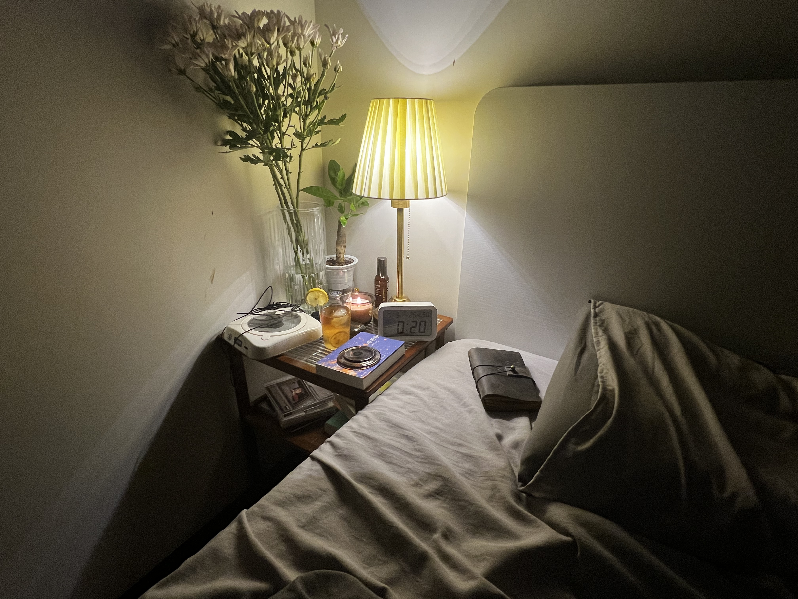

“我的两步大概是你的三步
我的四步大概是你的六步
Fmaj 7转E是乌云低气压
小拇指摁住3品的6弦开始放晴
左侧的心脏可以停下
因为在靠近你的时候
我大概也能感受到右边的跳动”
这段肤浅的构想
倒不失为朗朗上口的口水歌
易感
阿波罗之怀中教育道
尽量节约
或者
滥用无度
海报开始皱掉
我也解析不了重复了百遍的音符
什么历史啊 政治啊
科学什么的
我都想了一遍
而现在唯有金阁
金阁与我矗立在夺目的高峰上对视而望
这头的青春随着每一刻的结晶
变得愈发沉重
于是美的天秤不由得抬举着金阁
越发遥远
芬芳的肉体凝结着
拖着半生不熟的精神也一块下坠
世界为什么变得这样坏明明我什么也没有做错周遭的人却时时投来异样充满敌意的目光靠近亲人的野猫却被 “禁止投喂流浪猫”所迎来当头一棒我这样刻意的写下难读的没有标点的段落是为了拙劣的模仿尤利西斯的结尾尽管我连第一节都看不明白壮鹿馬利根为何物充满引申的希腊故事奥德赛啊奥德赛一个个宏伟的史诗与我又何相关呢十字路口人来人往人人内心都已被加速的社会控制茧房 抑或我已被社交媒体同化成同样的茧房 独立 独立啊 这样的外部依赖又谈何独立 一旦接触社会 我就觉得肮脏无比 驯化的每一个同类 周遭都将苦苦委身在求生之道上 月租几千的房间里无病呻吟 却不乏想象苦痛挣扎的人们的痛楚 啊 一切都烦到透顶
是缺乏高雅情趣之心所犯的过错
冰球伴着烛光
杯中闪烁的生命之水
发出阵阵溶解消蚀摩挲的声音
在烛蜡挥发的柏油香气中
飘香入腹

出租屋内添置人生的第一束鲜花
似血液一般
容易衰败腐坏
上海的郊外
安静的可怕
没有窗帘的床头
半个月来日日迎接恼人的晨光
困乏中陷入日复一日的循环
日渐炎热的无聊琐碎里
在心底一团血红的落日
灼烧一刻刻的冲动
每晚电车归家的路途
想起奔马
用刀腹突入腹中
在眼睑将落日的旭阳再度升起
心境也就献身伟大的构想
死
此刻午夜
传来流浪猫凄惨的声音
枕边的金阁寺
待到京都亲临心中的臆想
也会把这该死的
期待
统统烧掉
おやすみなさい
おやすみなさい
嘿
AI说酒精会加剧美利曲辛的效果
两种神经中枢的抑制剂
会让我停掉呼吸吗
嘿
我想明天换上我的新买的托特包
我想以后行街时里面塞满了我想要的东西
一壶酒
一个相机
一个娃娃
一些猫条
一些药片
和一份想和你说的期待
期待你问我为什么包里什么都有
我会调好龙舌兰和威士忌的比例
加上一些柠檬汁
因为我很喜欢柠檬的香味和酸涩
就像幻象的味道
嘿
我有好好活着
AI Lab的面试也通过了
羊文学的海外场也放票了
论文进展顺利
马上就能赶完了
嘿
今晚的月亮好亮
隔着云层朦朦胧胧的
像你一样
若隐若现
嘿
半夜回来的路上碰到了秋秋
还有一只从来没见过的狸花
它们一点也不怕我呀
它们害怕手机的闪光灯
所以我记录不到他们
手上全是毛
你的布偶有戴上我送的铃铛吗
嘿
《深呼吸》
也是羊文学的一首歌
古时人接物托思
月亮啊 花朵啊 秋风啊
什么都能引申啊
这刻 深呼吸吧
诉说我想要引申的意味
And Give You More than Word
嘿
深呼吸
广州夏天格外漫长 我的绝妙想法 判案叫绝 自我欣赏 零散 可是我总是串不到一起 那些飞散的奇思妙想 让我愉悦 当我宣战 统一 四散而逃 又将陷入自我否定 否定 拒绝 痛苦 喜悦 掺杂 像是音墙的噪声 每日最大的音量 我已经分不清是沉浸还是厌恶 渴求 交织 手指的淤血散了 今天我要去看医生